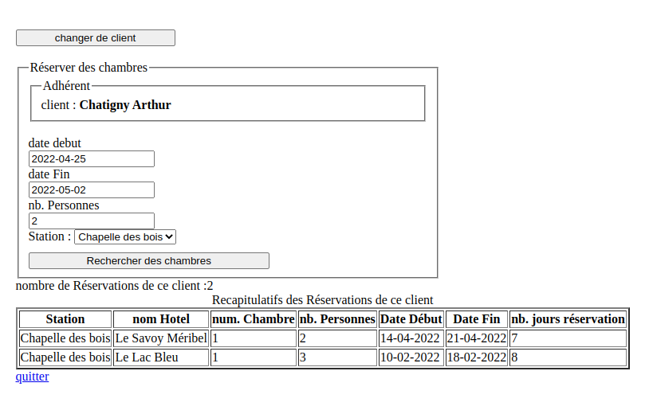

Partiel Bases de Données 2022
Durée : 2h Une feuille A4 manuscrite avec des notes de cours/TD/TP autorisée, calculatrice interdite
Dans cet exercice, on désire modéliser de façon très simplifiée le système d’une base de données pour gérer le travail des pâtissiers dans des boulangeries.
Les clés primaires sont soulignées et les clés étrangères sont précédées par un caractère ”#”.
Dans ce sujet, le mot « Patisserie » fait référence à la « préparation pour réaliser des gâteaux » et non à la « boutique ». Le pâtissier est une personne. L’attribut « idPersonne » de la table « realisation » est le patissier qui a réalisé la (les) pâtisserie (s) avec une déclinaison de recette.
Soit le modèle relationnel suivant :
boutique(idBoutique,nom,adresse,codePostal,ville)
estRattache(#idPersonne,#idBoutique,dateEmbauche)
realisation(#idClient,#idPatisserie,#numDeclinaison,dateRealisation, nbRealisation)
patisserie(idPatisserie,nom, categorie, prixUnitaire)
recette(#idPatisserie, numDeclinaison, ingredients, description, auteur , annee)
personne(idPersonne ,nomPersonne, prenom, anneeNaissance)
La catégorie d’un hôtel est une chaîne de caractère mais il est possible d’utiliser un entier : categorie = 0 à 5 (étoiles)
Les dates sont au format AAAA-MM-JJ dans la base de données mais sont affichées et manipulées au format JJ/MM/AAAA (si possible).
La majorité des données sont contrôlées coté serveur
Proposer un modèle conceptuel des données (MCD) associé au modèle relationnel précédent : modèle relationnel complet. Utiliser le logiciel Looping.
Écrire les requêtes SQL suivantes (bien numéroter vos requêtes) :
ATTENTION : - faire des sauts de ligne au minimum avant les mots clés « SELECT », « FROM », « INNER JOIN » , « WHERE », « GROUP BY », « ORDER BY » (sinon pénalité) - souligner les mots clés ci-dessus (sinon pénalité) - écrire le code complet de chaque requête (sinon pénalité importante) - utiliser uniquement les tables nécessaires
En utilisant le script généré par looping :
Écrire dans un fichier script_tp5.sql le script de création des tables correspondant au modèle ci dessus.
Supprimer toutes les tables si elles existent.
Créer toutes les tables si elles n'existent pas.
(Utiliser les mots clés IF EXISTS lors de la suppression de la table et IF NOT EXISTS lors de la création des tables.)
source dans le fichier script_tp5.sql pour importer les donnéesCommencer par tester des requêtes (sur un terminal ou ‘datagrip’) avant de les utiliser dans une application python pour gérer les hôtels, leurs chambres, les clients et les stations et enfin les réservations des chambres.
Dans un terminal ou sur le logiciel ‘datagrip’, réaliser les requêtes suivantes :
+-----------+--------------------+----------+----------------+----------+
| idStation | nomStation | altitude | region | nbHotels |
+-----------+--------------------+----------+----------------+----------+
| 1 | Metabief | 1512 | Jura | 2 |
| 2 | Courchevel | 1820 | Haute-Savoie | 2 |
| 3 | Meribel | 1920 | Haute-Savoie | 2 |
| 4 | Chapelle-des-bois | 1100 | Jura | 2 |
| 5 | le ballon d alsace | 1100 | Tre de Belfort | 0 |
+-----------+--------------------+----------+----------------+----------+Requête 1_2 : ajouter une station avec les informations du formulaire
Requête 1_4 : afficher uniquement l’enregistrement créé
Requête 1_5 : modifier l’ enregistrement en mettant par exemple en majuscule le nom et en minuscule le nom de la station
Requête 1_3 : supprimer l’enregistrement créé ci-dessus
Requête 1_6 : compter le nombre d’hôtels d’une station dont l’identifiant est passé en paramètre dans une variable, le résultat est une colonne unique de nom ‘nbrHotel’
Faire un test avec des variables dans un terminal
Configurer le fichier de connexion à la base de données : connexion_db.py avec vos paramètres : host,login,password,database
Ré-utiliser les requêtes ci-dessus dans le fichier controllers/admin_station.py ; tester l’application pour afficher/ajouter/supprimer/modifier des enregistrements.
L’interface web (mini-projet) ci-dessous réutilise le résultat de cette requête .
Pour la suppression d’une station, décommenter le code dans la fonction delete_station, de façon à ce que l’on ne puisse pas supprimer une station qui possède des hôtels dans la base de données, mais indiquer avec un message le nombre d’hôtel(s) à supprimer
Dans un terminal ou sur le logiciel datagrip, réaliser les requêtes suivantes :
Requête 2_1 : Afficher les informations sur chaque client
Cette requête retourne le nombre de réservation du client
Pour faire ce calcul, faire une jointure à gauche (ou droite) sur la table réservation
Faire un premier test et afficher le nombre de réservations
Dans l’interface de l’application si ce nombre de réservation (< 2 ans) est supérieur à 2, un message indique qu’il faudrait faire une remise lors de sa prochaine réservation au client
AND (CURRENT_DATE()<DATE_ADD(R2.dateDebut, INTERVAL XX YEAR) )Documentation (CURRENT_DATE() ou NOW() ou CURRENT_DATE() )
+----------+-------------------+-----------------------------------------+------------+----------------+--------------------------+
| idClient | nomClient | adresse | telephone | nbReservations | nbReservations_moins2ans |
+----------+-------------------+-----------------------------------------+------------+----------------+--------------------------+
| 1 | Dupont Paul | 8 rue du jardin BELFORT | 0602030405 | 2 | 1 |
| 2 | Lang Coralie | 83 Avenue Millies Lacroix TOULOUSE | 0661521923 | 10 | 4 |
| 3 | Durand Jacques | 11 rue de la lavande AVIGNON | 0684623597 | 2 | 1 |
| 4 | Martin Thomas | 14 rue du rocher PARIS | 0612457896 | 2 | 1 |
| 5 | Michel Pascal | 11 rue de la lavande AVIGNON | 0684623597 | 2 | 1 |
| 6 | Nadeau Alexandrin | 15 rue de la Mare aux Carats MONTROUGE | 0631743559 | 2 | 1 |
| 7 | Chatigny Arthur | 82 Place Charles de Gaulle VILLEMOMBLE | 0643520365 | 4 | 2 |
+----------+-------------------+-----------------------------------------+------------+----------------+--------------------------+
Requête 2_2 : ajouter un client avec les informations du formulaire
Requête 2_4 : afficher l’enregistrement dont l’identifiant est passé en paramètre
Requête 2_5 : modifier l’ enregistrement dont l’identifiant est passé dans le tuple avec les autres paramètres du tuple (du formulaire)
Requête 2_3 : supprimer l’enregistrement dont l’identifiant est passé en paramètre
Requête 2_6 : compter le nombre de réservations d’un client dont l’identifiant est passé en paramètre, le résultat est une colonne unique de nom ‘nb_reservations’, cette requête permet d’afficher un message si le client possède des réservations au lieu de supprimer le client
Recopier les requêtes ci-dessus controllers/admin_client.py ; tester l’application pour afficher/ajouter/supprimer/modifier des enregistrements
L’interface web (mini-projet) ci-dessous réutilise le résultat de cette requête
Dans un terminal ou sur le logiciel datagrip, réaliser les requêtes suivantes :
Requête 3_1 : Afficher les informations sur tous les hotels et le nombre de chambres
la dernière colonne est difficile à réaliser, il faut calculer si les chambres sont disponibles, une possibilité est d’ajouter dans une deuxième jointure sur la table chambre avec une condition
LEFT JOIN CHAMBRE AS CH2 on CH1.idHotel = CH2.idHotel AND CH1.numChambre = CH2.numChambre AND CH2.disponible=0résultat
+---------+--------------------+-------------------+----------------+--------------+------------------+------------+------------+
| idHotel | nomHotel | nomStation | categorie | region | photo | nbChambres | nbChambresNonDisponible
+---------+--------------------+-------------------+----------------+--------------+------------------+------------+------------+
| 30 | au jura | Chapelle-des-bois | deux étoiles | Jura | hotel_jura1.png | 4 | 1 |
| 31 | source du herisson | Chapelle-des-bois | deux étoiles | Jura | hotel_jura2.png | 2 | 0 |
| 16 | Bellevue | Courchevel | deux étoiles | Haute-Savoie | hotel_alpes1.png | 3 | 0 |
| 10 | Neige Blanche | Courchevel | trois étoiles | Haute-Savoie | hotel_alpes1.png | 3 | 0 |
| 5 | Le Lac Bleu | Meribel | deux étoiles | Haute-Savoie | hotel_alpes3.png | 1 | 0 |
| 4 | Le Savoy Méribel | Meribel | deux étoiles | Haute-Savoie | hotel_alpes2.png | 2 | 0 |
| 22 | Douce Brise | Metabief | deux étoiles | Jura | hotel_jura3.png | 4 | 1 |
| 20 | Les marmottes | Metabief | trois étoiles | Jura | | 3 | 0 |
+---------+--------------------+-------------------+----------------+--------------+------------------+------------+------------+
Requête 3_2 : ajouter un hôtel
Requête 3_4 : afficher uniquement l’enregistrement créé
Requête 3_5 : modifier l’ enregistrement créé ci-dessus
Requête 3_3 : supprimer l’enregistrement créé ci-dessus
Requête 3_6 : contenu de la liste déroulante : afficher l’identifiant et le nom de toutes les stations, trier les enregistrements par nom de station
Requête 3_7 : compter le nombre de chambres d’un hôtel dont l’identifiant est passé en paramètre dans une variable, le résultat est une colonne unique de nom ‘nb_chambres’
Recopier les requêtes ci-dessus controllers/admin_hotel.py ; tester l’application pour afficher/ajouter/supprimer/modifier des enregistrements
L’interface web (mini-projet) ci-dessous réutilise le résultat de ces requêtes
Dans le logiciel qui gère les réservations des hôtels, la gestion des chambres est différente des autres tables.
Le lien “gérer les chambres” depuis l’interface d’affichage des hôtels permet de gérer les chambres uniquement de l’hôtel sélectionné. Chaque requête par la suite va faire référence au numéro de l’hôtel passé dans le lien.
Dans un terminal ou sur le logiciel datagrip, réaliser les requêtes suivantes :
Afficher les informations communes à tous les chambres :
Requête 4_1 : Afficher pour un hotel la liste des chambres : idHotel , numChambre, nombre de lits, prix de location et frais de service de la chambre pour un identifiant d’hotel passé en paramètre
afficher ensuite si la chambre est disponible ou non, calculer à l’aide d’une jointure à gauche sur les chambres si la chambre est disponible aujourd’hui ou non : faire une jointure à gauche sur les chambres (avec les 2 identifiants : idhotel et numChambre) et ajouter une contrainte AND (CH3.numChambre,CH3.idHotel) NOT IN (SELECT numChambre,idHotel FROM RESERVATION WHERE dateDebut <= CURDATE() AND dateFin >= CURDATE())
exemple de résultat pour l’hotel d’identifiant 30 :
+---------+------------+--------+--------------+--------------+------------+----------------------+
| idHotel | numChambre | nbLits | prixLocation | fraisService | disponible | disponibleAujourdhui |
+---------+------------+--------+--------------+--------------+------------+----------------------+
| 30 | 1 | 3 | 250.00 | 4.00 | 1 | nonLibre |
| 30 | 2 | 2 | 150.00 | 5.00 | 1 | libre |
| 30 | 3 | 2 | 150.00 | 5.00 | 1 | libre |
| 30 | 4 | 2 | 150.00 | 5.00 | 0 | libre |
+---------+------------+--------+--------------+--------------+------------+----------------------+exemple de résultat pour l’hotel d’identifiant 30 :
exemple de résultat pour l’hotel d’identifiant 30 :
+---------+----------+-------------------+---------------+--------+-----------------+------------+---------------+-----------------+
| idHotel | nomHotel | nomStation | categorie | region | photo | nbChambres | nbChambresNon | nbChambresDispo |
| | | | | | | | Disponible | nibleAujourdhui |
+---------+----------+-------------------+---------------+--------+-----------------+------------+---------------+-----------------+
| 30 | au jura | Chapelle-des-bois | deux étoiles | Jura | hotel_jura1.png | 4 | 1 | 2 |
+---------+----------+-------------------+---------------+--------+-----------------+------------+---------------+-----------------+
Pour modifier un enregistrement :
Requête 4_10 : Afficher pour un hotel (une chambre d’un hotel) : nom de la station, nom de l’hotel, l’identifiant de l’hotel (renommé noHotel)
Requête 4_11 : afficher toutes les colonnes de l’enregistrement “chambre” (à partir du numéro de chambre et de l’identifiant de l’hotel)
Requête 4_12 : modifier l’ enregistrement avec les informations du formulaire
Pour supprimer un enregistrement :
Requête 4_7 : supprimer l’enregistrement à partir du numéro de chambre et de l’identifiant de l’hotel
Requête 4_8 : compter le nombre de reservations d’une chambre dont l’identifiant est passé en paramètre, le résultat est une colonne unique de nom ‘nb_reservations’
Recopier les requêtes ci-dessus controllers/admin_chambre.py ; tester l’application pour afficher/ajouter/supprimer/modifier des enregistrements
L’interface web (mini-projet) ci-dessous réutilise le résultat de cette requête
Méthodes nécessaires pour faire l’application
Interface : selection du client ?
Interface affichage des réservation du client
idée : calcul du cout de chaque réservation 
Interface 1 : sélectionner 2 dates et une station ou un région et proposer toutes les chambres disponibles
Interface 2 : proposer pour 1 mois (ou 2 mois) les réservations des chambres dans une station ou toutes les station
Interface 3 : réservation et facturation
calcul du cout de réservation d’une chambre
Interface supprimer en cascade des réservation
Dans le fichier controllers/admin_reservation.py, pour sélectionner des clients, il y a 2 cas :
exemple de résultat
Requête 5_3 :
Requête 5_4 : Liste des chambres disponibles : nomAuteur, titre, idHotel(id), idChambre(id)
Requête 5_9 : requête pour sélectionner une reservation avec une clé primaire (pas de jointure, uniquement la table reservation)
Requête 5_10 : requête pour supprimer une reservation avec une clé primaire
Requête 5_11 : requête pour sélectionner tous les reservations (trié par nom d’client et date de reservation)
Liste des reservations idClient(id), numChambre(id), idHotel, nomHotel nomClient , date_debut, date_retour , nombre de jours entre la date d’aujourd’hui (curdate) et la date_debut, si le paramètre idClient est vide, afficher tous les reservations (find_clients_select_reservations(idClient))
Afficher le CA des chambres dans un hotel pour 1 mois ; 1 an Afficher le taux d’occupation dans un hotel des chambres pour une période donnée